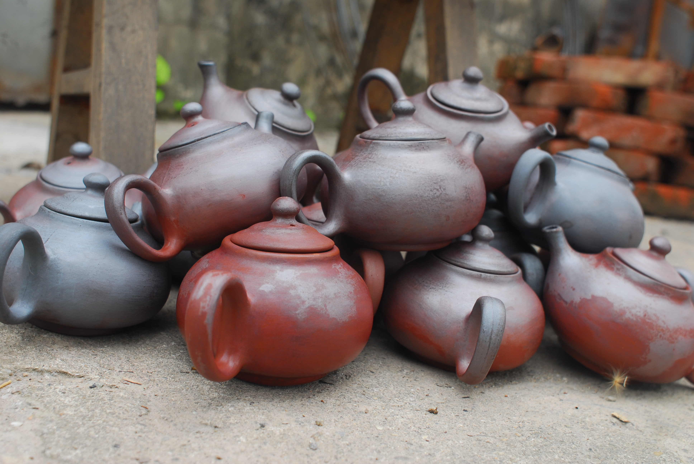
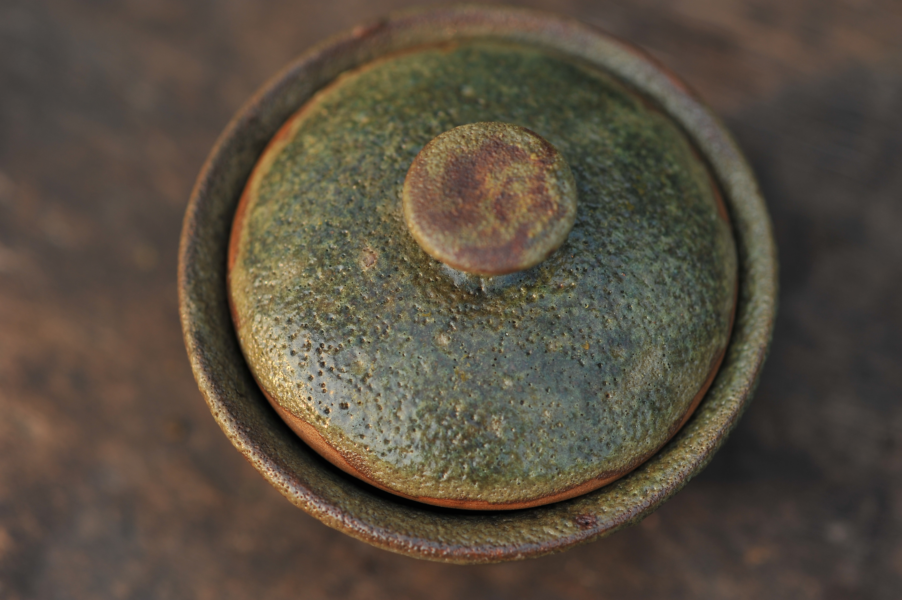

Gốm & ký ức dòng sông
Một dự án thử nghiệm giữa gốm nung khử và hội họa mực nước.
Những cuộc gặp gỡ giữa gốm và các nghệ sĩ, nơi đất và lửa trở thành chất liệu kể chuyện.
Một dự án thử nghiệm giữa gốm nung khử và hội họa mực nước.

Chuỗi chén trà mang dấu vết của nhạc và lửa.
Gốm Nghê không chỉ mang cho các bạn ấm trà, cái chén, cái bát, cái đĩa mà còn mang tới các bạn vẻ mộc mạc, ngô nghê, văn hóa Việt trong đó.


